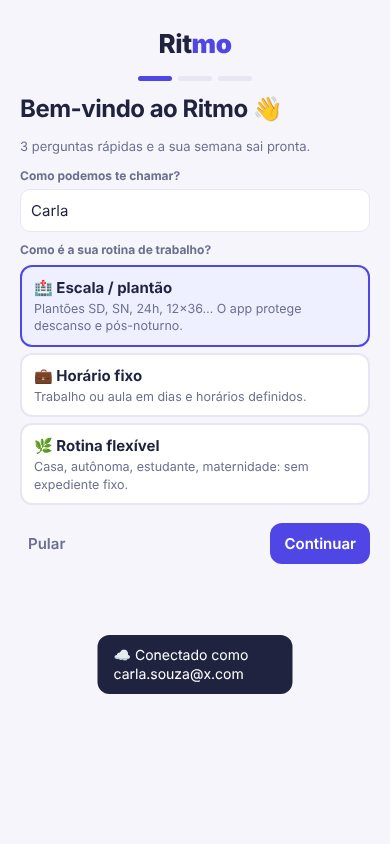
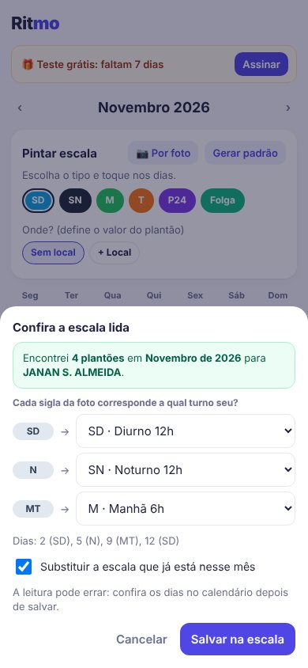
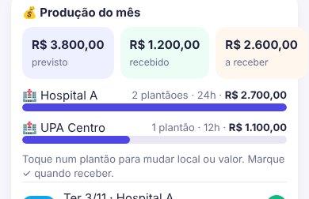

Como usar o Ritmo
Guia rápido. Em 5 minutos sua escala está marcada e a semana, organizada.
1 Criar a conta e instalar
- Abra consultaia.github.io/consultaia-ritmo e toque em Começar 7 dias grátis. Só precisa de e-mail e senha, sem cartão.
- Responda as 3 perguntas das boas-vindas: seu nome e tipo de rotina, sua escala (ou horário) e o que quer encaixar na semana. No fim, a semana já aparece montada.
- Instale no celular: toque em 📲 Instalar no topo. No iPhone: Safari → Compartilhar → Adicionar à Tela de Início. O Ritmo vira um ícone e abre como app.
Funciona no celular e no computador com a mesma conta. O que você lança num aparece no outro.

2 Marcar a escala
Na aba Mês há três jeitos:
- Tocar nos dias: escolha o turno (SD, SN, M, T, 24h) e toque nos dias do calendário. Tocar de novo apaga.
- Gerar padrão: para 12x36, 24x72 e outros ciclos. Informe o primeiro dia e o Ritmo preenche até 6 meses.
- 📷 Por foto: fotografe a escala do mês, diga seu nome como aparece nela, confira as siglas lidas e salve.
Seus turnos têm outro nome? Em Ajustes → Turnos e plantões você muda sigla, nome, horário e cor, ou cria turnos novos (ex.: “MT – Manhã e tarde”).
Não trabalha de escala? Em Ajustes → Perfil escolha Horário fixo ou Rotina flexível.

3 Distribuir a semana
- Em Ajustes → Atividades recorrentes, diga o que quer fazer toda semana: academia 3x, faxina 1x, mercado… com duração, período preferido e se é “só em dia de folga”.
- Em Planos → Tarefas, jogue as tarefas soltas (com prazo e prioridade, se quiser).
- Na aba Semana, toque em ⚡ Distribuir semana.
O Ritmo encaixa tudo no seu tempo livre, respeitando o plantão, o deslocamento, o sono e o descanso depois do noturno. Mudou o plantão? Toque em Distribuir de novo.
- Toque num bloco para mudar o horário ou o dia. O que você ajusta à mão não é mexido depois.
- ▦ Grade mostra a semana no estilo calendário. 📅 .ics leva a semana para o Google Agenda.

4 Anotar falando ou escrevendo
Toque no botão ＋ e fale (🎙️) ou escreva do seu jeito. O Ritmo entende o que é e já preenche data e hora:
| Você diz | Vira |
|---|---|
| consulta sexta às 14h30 | Compromisso na agenda |
| me lembra de pagar a luz amanhã 10h | Lembrete |
| tomar remédio todo dia às 8h | Lembrete que repete |
| reunião segunda 9h, avisar 30 minutos antes | Compromisso com aviso antecipado |
| gastei 45,90 no mercado | Gasto |
| comprar presente da Bia | Tarefa na fila |
Antes de salvar você confere e corrige o tipo, a data, a hora e a categoria.

5 Lembretes e avisos
- Ative os avisos uma vez: em Ajustes → Avisos → Ativar avisos (ou no cartão “Resumo do dia”). A partir daí a notificação chega mesmo com o app fechado.
- Quanto tempo antes: ao criar, escolha em Avisar: na hora, 5, 10, 15 ou 30 min, 1 h, 2 h ou 1 dia antes. Compromissos já vêm com 30 min antes.
- Repetir: todo dia, toda semana ou todo mês. Ao marcar como feito, ele passa para a próxima data.
- Editar: toque no lembrete em Planos → Lembretes para mudar título, hora, antecedência ou repetição.
O aviso pode chegar com até 1 minuto de diferença. Para coisas críticas, como horário de medicação, não dependa só da notificação.
6 Ganhos por plantão
- Em Ajustes → Locais de trabalho e valores, cadastre cada hospital e quanto ele paga por turno (SD, SN, 24h…).
- No Mês, antes de tocar nos dias, escolha Onde?. O plantão entra já com o valor daquele local.
- Em Produção do mês você vê o total previsto, o que já recebeu e o que falta, separado por local.
- Toque num plantão da lista para trocar o local ou colocar um valor diferente (extra, feriado).
- Marque ✓ quando o pagamento cair.

7 No dia a dia
- Hoje: resumo do dia, as 3 prioridades, hábitos (com sequência 🔥), agenda e “como foi seu dia”. O botão 📲 Mandar no WhatsApp envia o resumo para quem você quiser.
- Planos: tarefas, lembretes, hábitos, metas do mês e gastos.
- Gastos: lance pelo ＋ (“gastei 30 no uber”). Veja o total do mês, por categoria e a comparação com o mês anterior.
- Painel: quanto da semana foi plantão, quanto foi para você e quanto sobrou livre, além dos hábitos e do humor.

8 Planos e pagamento
- 7 dias grátis para testar tudo, sem cartão.
- Depois: Mensal R$ 9,90, 6 meses R$ 49,90 ou Anual R$ 89,90.
- Plano Casal (2 contas, cada uma com a própria agenda): R$ 14,90/mês ou R$ 129,90/ano. Quem paga informa o e-mail da outra pessoa em Ajustes → Conta.
- Pagamento por Pix ou cartão pelo Mercado Pago. Não renova sozinho: acabou o período, você decide se continua.
- Para assinar: Ajustes → Conta → Assinar. A liberação é na hora.
Se o plano vencer, seus dados continuam guardados. Você pode desistir em até 7 dias após o pagamento e receber o valor de volta.
? Dúvidas rápidas
- Esqueci a senha. Na tela de entrar, toque em “Esqueci a senha” e siga o link do e-mail.
- Funciona sem internet? Sim, depois de instalado. Sincroniza quando a internet voltar.
- Uso no celular e no computador. Entre com a mesma conta nos dois. As alterações se juntam sozinhas.
- Quem vê meus dados? Só você. Veja a Política de Privacidade.
- Quero guardar uma cópia. Ajustes → Backup → Exportar backup.
- Não recebi a notificação. Confira se “Avisos ligados neste aparelho” aparece em Ajustes → Avisos e se as notificações do navegador estão permitidas. No iPhone, instale o app primeiro.